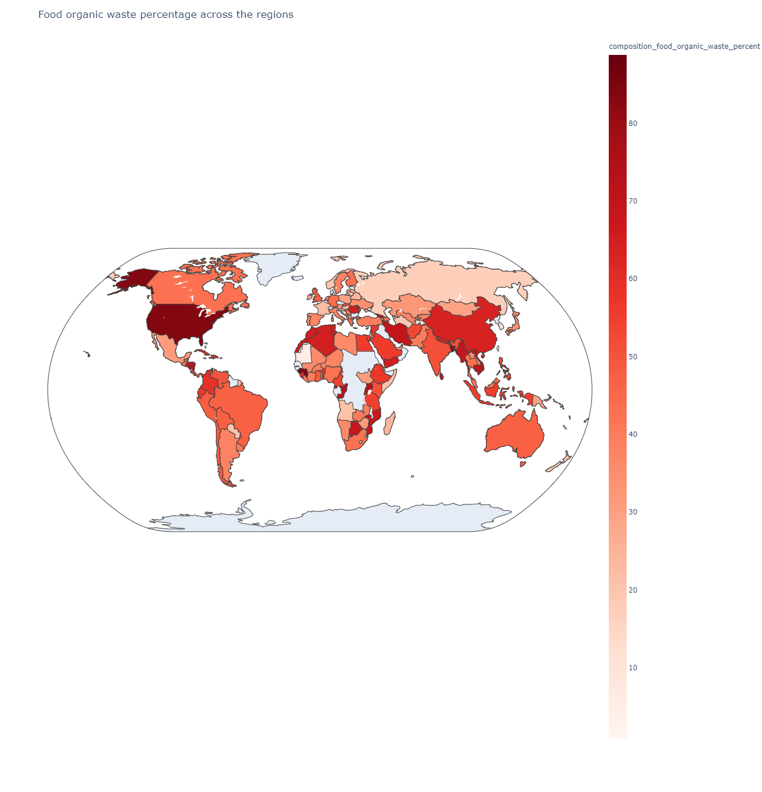
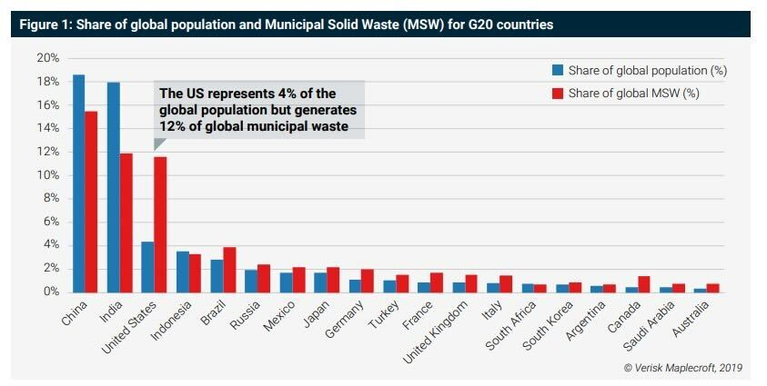
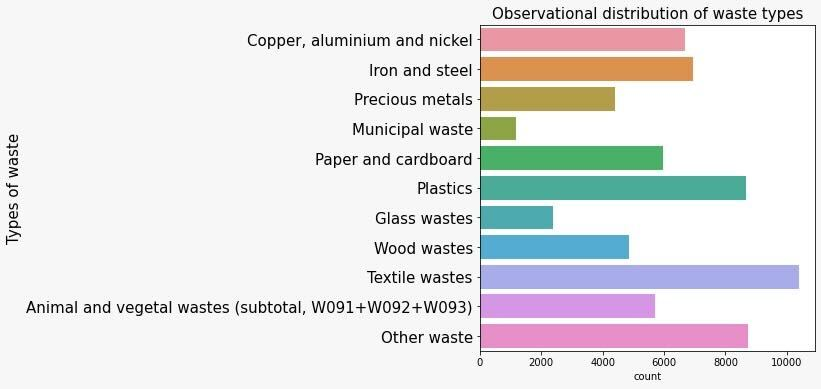

Food waste is a part of the world’s annual waste issue. Roughly one-third of the food produced in the world for human consumption every year, gets lost or wasted.
According to the following map, it is noticeable that there is a high range of food wasted across the different regions. The darker the red color is, the higher is the percentage of the food wasted in the country.
Research shows that there is a relationship between global population percentage and the solid waste percentage. The higher the population is, the more is the solid waste share, throughout the year. But unfortunately, that doesn't apply to the US, it seems that the US is facing more waste than usually expected as shown in the trend.
Another issue we’re facing is OBS trading. If you haven’t heard of OBS before, then you may not know that you can trade waste for money! OBS is an off-balance sheet items that is an accounting practice whereby a company does not include a liability on its balance sheet. Why is that?? Countries that cannot afford to burn their own waste in their own place, trade waste.
According to some data analysis, an observational distribution of the different types of waste was important to see which type needed the most recycling and recommendations, so we can get rid of OBS and Waste management issues. Textile wastes are one of the highest counted types of waste, they’re defined as the material that becomes unusable or worthless after the end of the production process of any textile product. On the other hand, municipal waste is the least counted waste which covers households, including bulky waste, similar waste from commerce and trade, office buildings. So how can we solve this issue? This is where The Recycling Ninja comes to rescue! The Recycling Ninja is a website that would help and tell you how the waste material in your curbside can be recycled according to your own city’s recycling data. It can also send you recommendations for what you’re looking for!
{% endblock %}